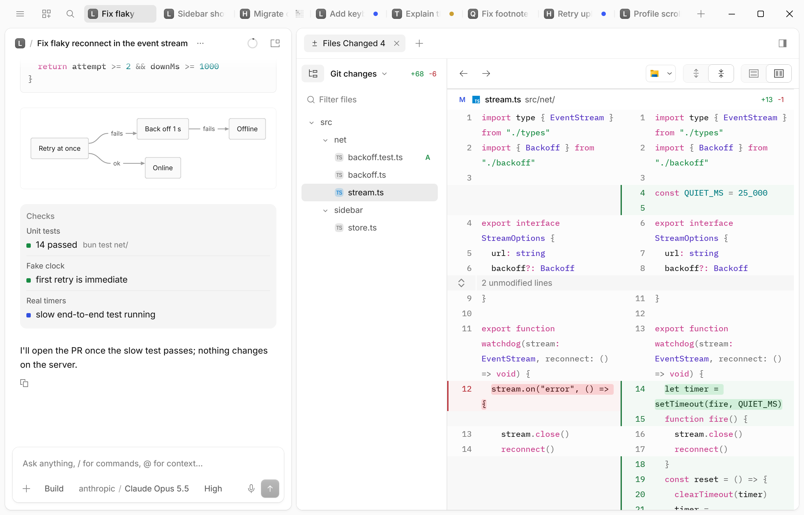
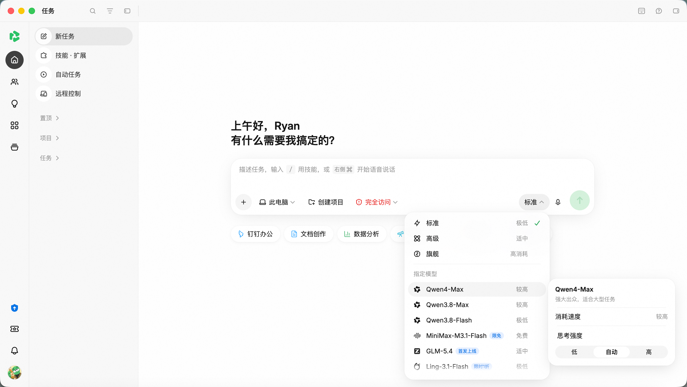
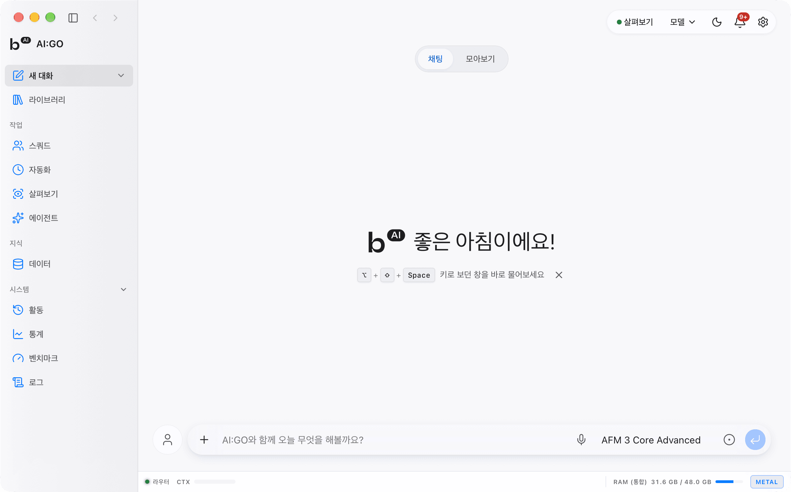

AI Intelligence Daily · 2026-11-28（周六）
统计窗口：主窗 2026-11-27 08:00 → 2026-11-28 08:00（上海 / Asia/Shanghai）。吸收 11-27 白天快讯 09:04 至 22:47 全部 SILENT near-miss，以及 19:02 PUSH（MCP 官方参考服务器 v2.6.0），并补扫约 14:50Z 至 00:00Z 的隔夜官方 X 与官网。事实与判断分区 · 国内/国际双轨。· 已在售 Desktop/CLI：本窗能力向变化是 千问办公客户端 2.3.0 / 2.3.1 / 2.3.2（思考分档、记忆容量与迁移、技能/连接器/专家套件可用性，以及同日两则补丁；按已在售 Work 客户端小版本计入 desktop_shipping），Qoder Desktop 0.5.21（把本机已授权的 Streamable HTTP AppHub 连接器同步到云端，不计新的 desktop_shipping）与 Qoder CLI 1.1.100（22:47 快讯时官方 changelog 仍顶 1.1.99，隔夜已补登 November 27 说明，含内置 PDF 插件、MCP Apps 协议补强，以及 Edit 不再必须先 Read），另有官方账号宣布的 Qoder Mobile 功能升级。国际一侧，官方 changelog 顶出 Antigravity App v2.36.0（Auto mode 扩大到当前项目外的安全编辑、~/.agents/skills 发现、桌面端为云端自动化授权等）；MiniMax CLI 0.8.0（Desktop 仍 3.1.19）；GitHub Copilot CLI latest 1.0.117；以及小米 MiMo-Code v0.1.18。隔夜 @opencode 宣布可试用下一代桌面 OpenCode Rune 的 early / dev 构建（稳定 Desktop 仍为 v2.4.2，不以 dev 写成已转正）。安全主线是 19:02 已推送的 MCP 官方参考服务器 v2.6.0（8 则新 GHSA，git LFS 配置执行面为 High）。补记：讯飞 WinWork V1.1.31（页 Last-Modified 落在 Daily 11-27 窗内，当时漏记）。点版本与预发：Factory npm 1.23.0@23:41:20Z（官方 changelog 仍顶 1.21.0 / November 25，不以无说明的 npm 点版本写成 Desktop 新发船）· Copilot CLI prerelease 已到 1.0.118-1@23:01:31Z（不以预发写成已发船）· Codex latest 仍 0.172.0（alpha 已到 0.174.0-alpha.9@16:56:00Z）· Claude Code latest 仍 2.1.332 · Gemini CLI 仍 0.71.1 · Qwen Code latest 仍 0.28.7 · Kimi Desktop 稳定仍 1.5.1 / CLI 2.8.1（canary 已到 Desktop 1.6.0 与 CLI 2.9.0 线，不以 canary 写成已发船）· CodeBuddy latest 仍 2.187.0 · MiniMax Desktop 仍 3.1.19 · ZCode 仍 4.0.0 · 小艺 Work 仍 0.7.8 · StepCode 仍 0.1.8 · OpenCode 稳定顶仍 v2.4.2 · dsh latest 仍 0.2.2-rc.5 · agent-desktop 仍 1.3.1。OpenAI 状态页：All Systems Operational。Claude 状态页：claude.ai 组件仍显示 10:40:12Z 的 degraded_performance，Microsoft 365 加载项事故仍为 identified，正文停在 11-25 20:21:12Z，不能写成新开事故。★（约 08:10 CST，对比 Daily 11-27 约 08:10 CST）：deepseek-harness 288,041（+433）· opencode 229,636（+231）· servers 92,300（+17）· AngelSpec 437（+79）· qwen-code 30,988（+24）· Hy-MT3 100（+9）· kimi-code 8,317（+10）。本窗新开源跟踪 anomalyco/opencode-rune 186（仓库创建于 11-04，不编造更早基线）。
今日一句话判断
今天真正往前推的，不是又一个更强的模型，而是默认工具通道再次被证明不能当成已经闭合的信任边界：MCP 官方参考服务器在 v2.5.0 之后仍留下 Git LFS 配置执行面；同一天，工作端把本机连接器同步到云端、把思考分档写进客户端，并公开试用一台启动时不带 Electron 的下一代桌面。
专栏一｜新闻
本栏结构：
- 国际安全头条（19:02 已推送）：MCP 官方参考服务器发布 v2.6.0，公开 8 则新 advisory，并补完 v2.5.0 留下的两处加固缺口（UPDATE 235）
- 国际工程中栏：OpenCode 官方账号宣布可试用下一代桌面 Rune 的 early / dev 构建，用原生框架重写，启动时不加载 Electron（NEW 316）
- 国际产品中栏：Antigravity App v2.36.0 把 Auto mode 扩大到当前项目外的安全文件编辑，并加入
~/.agents/skills发现和桌面端云端自动化授权（NEW 317）。官方 X 同窗宣传的 Inline GitHub PR pills，官方 changelog 写明属于 v2.33.0 / November 17，不以今日帖写成新发船 - 国内产品中栏：千问办公同日连发 2.3.0 / 2.3.1 / 2.3.2（UPDATE 260，desktop_shipping）
- 国内工程中栏：Qoder Desktop 0.5.21、CLI 1.1.100 与 Mobile 升级（UPDATE 248 / 308）
- 国际产品中栏：Lablup 官方新闻稿宣布 AI:GO 2.0（NEW 318；稳定安装包已于 11-18 发出，今日是正式新闻稿）
- 国内开源中栏：小米 MiMo-Code v0.1.18，技能可动态发现，并补上 MCP 标准 form elicitation（NEW 319）
- 国际工程短栏：GitHub Copilot CLI 1.0.117 把自定义 CA、自定义 Agent 的显式工具暴露和 MCP 审批边界写入稳定通道
- 国内生态短栏：Kimi for Science 科研 API 额度计划开申报（NEW 320）
- 短讯：MiniMax CLI 0.8.0、WinWork V1.1.31、ZCode 周末额度、Factory npm 1.23.0、状态页
排序依据：重要度 → 与两条主线的相关性 → 时效。MiniMax CLI 0.8.0、WinWork V1.1.31 等已跟踪产品的点版本，放入「重点事件新进展」。
1. MCP 官方参考服务器 v2.6.0：v2.5.0 加固仍不完整，git 再发 High（LFS 配置执行）并补完两处遗漏
强A · UPDATE · 国际 · G/E/C · 主窗 · 19:02 已推送 · watchlist 235
发生时间：GitHub Release v2.6.0 发布于 2026-11-27T09:51:35Z（17:51:35 CST），页更新 09:58:10Z；8 则新 GHSA 于 10:08:51Z–10:11:08Z（18:08:51–18:11:08 CST） 公开；PyPI mcp-server-git / mcp-server-fetch 2026.11.27 分别上传于 09:53:31Z / 09:53:29Z。本窗无官方 X 宣布。11-27 19:02 快讯已按强 A 推送，今日日报吸收并写入完整判断，不重复打断。
发生了什么
官方参考服务器仓库发布 v2.6.0，对比此前跟踪水位 v2.5.0。发行说明写明：修复三个服务器中的八个漏洞，并补完 v2.5.0 留下的两处加固。同窗公开的 8 则 advisory 均尚无 CVE 号。mcp-server-git 须升到 2026.11.27（受影响至 2026.11.18）。
其中 1 则 High：GHSA-6663-fm5v-gqm5（CVSS 7.8）——在已安装 Git LFS 时（官方 Docker 镜像会系统级安装），只读的 git_status 以及 git_diff / git_add / git_checkout / git_merge 等工具，仍可能执行仓库 .git/config 里 Git LFS 过滤器或自定义 transfer 所指向的程序。另有 4 则 Medium：配置根可通过 .git 指针改指向其他仓库；git_remote 凭证脱敏可被 tab / 前缀 URL 绕过；repo_path 会展开环境变量并在错误信息中泄露；并发改写 objects/info/alternates 可让 git_show 读到仓外对象。1 则 Low：git_merge 仍可能覆盖被忽略的本地文件，例如 .env。@modelcontextprotocol/server-memory@2.2.2 修复 saveGraph 临时文件 chmod 竞态（Medium）。mcp-server-fetch 2026.11.27 补完 v2.5.0 对 robots.txt 路径归一化的遗漏（Low）。Windows 上 @modelcontextprotocol/server-filesystem@2.4.1 收窄此前留下的列举缺口，但正文仍写明：读写过程中被换上又换回的目录替换，在 Windows 上仍检测不到。发行说明再次提醒：日期版本线（2025.x / 2026.x）不会被包管理器自动升到语义化补丁，须显式安装。
我的判断
判断：这是与 11-11、11-18 快讯同一参考实现的第三轮续补丁。v2.5.0 把 2026.11.11 的 harden_repo 补了一轮，但 LFS 过滤器、工作区写入后再改配置，以及 Windows 列举残余并未一次收住。真正重要的不是又出现了八个编号，而是「只读 Git 工具」和「已经打过补丁的仓库配置」这两条常见假设再次被打穿。短期信号是立刻升级并盘点模板、客户端是否仍钉死日期版本；长期信号是「按键名单硬化」挡不住 Git 配置面的长尾，不能把上一轮补丁当成已闭合。
未来影响
凡把官方参考服务器当默认依赖的客户端、模板和托管运行时，都要把这轮补丁水位算进信任假设。日期版本不会自动跳到语义化补丁，意味着不少现网安装可能看起来「已经跟到 2026.11.x」，实际上仍停在受影响线。CVE 尚未补录，Windows 上的替换窗口也还在，后续仍可能有第四轮。
对智能体互联网的启示
若发现、授权和跨 Agent 调用链把「只读 Git 工具」或「已在 v2.5.0 加固的仓库配置」当成可信边界，这次会再次被打穿。参考实现对大量客户端仍是默认依赖，补丁水位属于 Trust 模型的一部分，而不是可选项。
对 Work / Agent 引擎的启示
凡内置或默认拉起 mcp-server-git / server-memory / mcp-server-fetch / server-filesystem 的 Harness、沙箱与权限模型，应将 git / fetch 2026.11.27、memory 2.2.2，以及 Windows 上的 filesystem 2.4.1 视为当前最低线，并检查自研 Git 工具是否复制了同一硬化白名单。不要假设上一轮补丁已经覆盖 LFS、工作区写入后的二次校验，以及 Windows 列举。
值得进一步做什么
立即升级受影响包；清点是否钉在 2025.x / 2026.x 日期版本（须显式安装语义化补丁）；跟踪 CVE 是否补录，以及 filesystem 在 Windows 上仍未检测的替换窗口；对照自研 Git MCP / 默认模板做一次同类检查，尤其是官方 Docker 镜像默认带 Git LFS 的路径。
配图
原文 GitHub Release 与各 GHSA 页无新闻附图，本条不配图。
真实来源
- 主来源：https://github.com/modelcontextprotocol/servers/releases/tag/v2.6.0
- 补充：https://github.com/modelcontextprotocol/servers/security/advisories/GHSA-6663-fm5v-gqm5 ；https://pypi.org/project/mcp-server-git/2026.11.27/
2. OpenCode 放出下一代桌面 Rune 的 early / dev 构建：用原生框架重写，启动时不加载 Electron
A · NEW · 国际 · C/B/K · 隔夜 · watchlist 316
发生时间：@opencode 于 2026-11-27T21:51:53Z（11-28 05:51:53 CST） 宣布「you can now try an early version of OpenCode Rune」。本报核验时，该官方帖 likes 1,309、转发 72、回复 53、书签 433、展示约 46,021（工具返回值）。仓库 anomalyco/opencode-rune 创建于 2026-11-04T17:45:01Z，默认分支为 dev；本窗可见最新 tag v0.0.0-dev-501 published 19:04:36Z（11-28 03:04:36 CST）。官方稳定 Desktop 说明页 https://opencode.ai/desktop changelog 顶仍是 v2.4.2 / 2026-11-26，不能把 Rune 写成稳定通道已切换。
发生了什么
OpenCode 官方账号称，可以试用下一代桌面应用的早期版本：用自家原生应用框架重写，不再基于 Electron，因而「quite snappy」。官方 README 写得更完整：桌面客户端在 Rust 上的 Rune 框架里从头重写，原生覆盖 macOS、Windows 和 Linux，也可在浏览器里通过 WebGPU 跑同一套应用；启动时没有 Electron、没有 DOM、也没有 Chromium。内置浏览器用隔离的 CEF sidecar，只在打开浏览窗格时才拉取。仓库提供各平台 dev 安装包，macOS / Windows 的 dev 构建会在后台自动更新。
README 还列出了原生引擎组合：Ghostty-VT 终端标签、虚拟化的语法高亮与 split diff、GPU 上的生成式 UI 与矢量图、Office 预览、本地 Hex 语音输入，以及 crash-safe 的 SQLite。官方自称「10–100× faster and lighter」，这是项目自评，本报未做独立复测。README 同时写明一条工程政策：仓库默认不设自动化测试或 mock，「Application code is truth」。
我的判断
判断：这是本窗对 Work / Agent 桌面形态最值得看的一条，但它是 early / dev，不是 GA，也不是把现有 OpenCode Desktop 用户自动迁过去。仓库 11 月 4 日就已经存在，dev 构建在官方发帖前已连续打 tag，今天真正新的是官方账号把「可以试用」说出来。它重要的地方不在星标，而在产品假设变了：编码 Agent 的桌面不再默认等于「再包一层 Chromium」，启动成本和浏览器用的浏览器被拆开。长期看，这是桌面 Agent 运行时路线的信号；短期仍应把它当成可试用的下一代客户端，而不是已替换的稳定版。
未来影响
如果这条路线站得住，后续桌面 Agent 会更常被拿来比较：冷启动是否还要先付 Chromium 的税、内置浏览器能不能按需加载、终端和 diff 是否还要走 DOM。这不会立刻改变模型格局，但可能改变「什么样的 Desktop 才算工作端」的默认答案。官方「快 10 到 100 倍」不能直接写进选型结论。仓库明确不设自动测试，试用时更需要自己做回归，而不是把它当成已经产品化的稳定通道。
对智能体互联网的启示
无直接启示。这是客户端运行时形态，不是发现、身份或跨 Agent 协议本身的变化。
对 Work / Agent 引擎的启示
值得对标的是「启动时零 Chromium、浏览器按需加载」和「同一套原生 UI 也能进浏览器」这两件事。若自研 Desktop 仍把 Electron 当成唯一合理默认，至少应把冷启动、内存和内置浏览器的成本单独记账。也不要把 Rune 的 dev 自动更新政策，直接套到自己的稳定通道。
值得进一步做什么
下载官方 dev 构建做一次观感与资源占用对照；拆 README 与 docs/releasing.md，看通道、签名和 CEF sidecar 的边界；暂不必因 early 构建改稳定产品路线。关注何时出现非 v0.0.0-dev-* 的稳定发行，以及 https://opencode.ai/desktop 是否改口。
配图

见图 1。图片出自官方仓库 README 的产品界面图 docs/assets/app-hero-light.png，来源页：https://github.com/anomalyco/opencode-rune
真实来源
- 主来源：https://x.com/opencode/status/2126433856370638952 ；https://github.com/anomalyco/opencode-rune
- 补充：https://opencode.ai/desktop （稳定通道仍为 v2.4.2，用于对照，不是 Rune 发船页）
3. Antigravity App v2.36.0：Auto mode 可批准当前项目外的安全编辑，并发现 ~/.agents/skills
A · NEW · 国际 · C/B/E/F · 主窗 / 隔夜补核 · watchlist 317
发生时间：官方 changelog https://antigravity.google/docs/changelog/ 将 v2.36.0 标为 Latest，日期栏 November 27, 2026，无精确到分钟的发布时间。标题为「Floating composer in maximized panels, Auto mode edits, and voice context」。本窗 11-27 日间快讯未写入该 App 版本；隔夜官方 X 检索中，@antigravity 于 17:00:00Z（11-28 01:00:00 CST） 宣传 Inline GitHub PR pills，该帖 likes 1,214、转发 64、回复 89、展示约 142,841（工具返回值）。但同一官方 changelog 把「live GitHub pull request status pills」写在 v2.33.0 / November 17, 2026，不能把今日宣传帖写成这项能力今天才首次发船。官方 CLI changelog 页可见最新条目仍为 v1.5.16；本报此前已核验到 CLI 1.5.18，不以网页目录回退改写已记录的 CLI 水位，也不把 2.36.0 写成 CLI 新发船。
发生了什么
官方说明称，这个版本加入最大化侧栏里带实时状态的浮动输入条，把 Auto mode 扩大到自动批准当前项目之外的安全文件编辑，并把已结束的语音通话上下文带进本地对话。changelog 列出 13 项改进和 26 项修复。对工作端更关键的几条包括：Auto mode 现在可以在其他受版本控制的仓库里自动批准安全的文件编辑，以及当前项目之外、不覆盖已有文件的新增文件，且不再为此弹确认；应用会发现存放在 ~/.agents/skills 的自定义技能，若与 ~/.gemini 中的技能重名，后者优先；可直接从桌面应用为远程 Agent 的云端自动化做授权，登录会在系统浏览器里打开 Google 登录；对支持离线访问的 MCP 服务器，OAuth 登录会请求 offline access，以便自动发放 refresh token、减少反复登录。管理员关闭的插件和 Marketplace 控件会以灰色保留并给出说明，内置插件继续可用。官方写明新版本会逐步推送，可能需要几天才能到达全部用户。
我的判断
判断：真正值得写下的是权限边界和技能发现，而不是 PR pills 的宣传视频。Auto mode 从「当前项目里少问几次」走到「其他仓库和项目外新增文件也可以自动批」，这是 harness 默认信任范围的扩张。它被官方称为「safe file edits」和「non-replacing file additions」，但这仍是产品自己的安全定义，不是本报审计。~/.agents/skills 则说明技能目录开始出现跨产品的约定位置，和近期「Skills over MCP」是同一类方向，只是落地在本地文件系统。今日 X 帖互动很高，但对应的是 11-17 已写入 changelog 的能力，属于宣传，不是新发船。
未来影响
工作端如果继续把 Auto mode 做成默认，就需要更清楚地区分「当前工作区」「其他仓库」和「项目外新建」。否则，一次扩大批准会在用户没有意识到的目录里改文件。技能发现约定若被更多客户端采用，~/.agents/skills 可能成为本地技能的公共放置点，也会成为供应链检查要覆盖的位置。MCP 的 offline access 能减少反复登录，同时也让 refresh token 的保管变成桌面运行时的一部分。
对智能体互联网的启示
技能发现路径开始从单一产品目录，转向更通用的本机位置；MCP 登录则明确要离线刷新。这些还不是跨网络的身份标准，但已经在单机和云端自动化授权之间加了一条桥。
对 Work / Agent 引擎的启示
Auto mode 的范围必须可观察、可收回，并且要能回答「这次自动批准覆盖了哪些仓库」。技能加载顺序（~/.gemini 优先于 ~/.agents/skills）也值得写成明确规则，而不是隐式覆盖。不要把官方「safe」直接当成自己的权限模型。
值得进一步做什么
对照自研 Auto / 免确认策略，检查是否会在工作区外写文件；关注 ~/.agents/skills 是否被其他客户端接受；把今日 PR pills 宣传帖从发船清单里拿掉，避免误记。官方称逐步推送，观察何时到达全部用户。
配图
v2.36.0 官方 changelog 无该版本专属产品附图；同窗 X 帖配的是已于 11-17 发船的 PR pills 演示，不拿来给本条配图。本条不配图。
真实来源
- 主来源：https://antigravity.google/docs/changelog/
- 补充：https://x.com/antigravity/status/2126360403022069908 （PR pills 宣传帖；能力属 v2.33.0 / November 17）
4. 千问办公同日连发 2.3.0 / 2.3.1 / 2.3.2：思考分三档，记忆和技能目录被补成可操作的产品表面
A · UPDATE · 国内 · C/D/B · 主窗 · desktop_shipping · watchlist 260
发生时间：官方客户端日志 https://docs.qwenwork.cn/release-notes/desktop 将 千问办公 2.3.0 / 2.3.1 / 2.3.2 均标为 2026年11月27日，无精确到分钟的发布时间。11-27 10:56 快讯仍顶 2.2.1 / 11月26日；12:51 扫描见到 2.3.0 / 2.3.1，16:56 扫描见到同日补丁 2.3.2。@Alibaba_Qwen 本窗无对应宣布。网页端日志未同步到 2.3。这是已在售 Work 客户端的小版本，按与昨日 2.2.x 相同的口径计入 desktop_shipping，不按首发邀测打断。
发生了什么
2.3.0 把模型思考设置写成「低 / 自动 / 高」三档：任务会记住上次档位，对话中途可切换，并更清楚提示消耗。记忆设置会显示账号实际可用容量，存满时提示删除腾空间；首次迁移会保留云端已有内容，未开云同步或企业未授权时仍可在本机查看和编辑记忆，之后开启同步再上传本机修改。行业推荐的技能、连接器和专家套件可查看详情、安装和更新；技能较多时，优先保留随连接器安装或由企业管理员下发的重要技能。远控设备权限变化时，云端任务和项目列表不再反复消失；本机自动任务的项目选择、整组处理和执行记录也更统一。另有钉钉批量授权、飞书补授权提示、命令行连接器误报认证，以及共享数据模式下 OAuth 重装等修复。符合条件的国内账号可参加「邀请有礼」及商家认证/验店授权。
2.3.1 修复自动任务将本机已有会话误判为不可用、无法打开原对话，以及会话删除或恢复后执行历史状态未正确更新。2.3.2 修复电商版身份切换不生效，并做 CPU 优化。
我的判断
判断：这不是新的 Computer Use 或跨端 Runtime 首发，而是把昨日刚写下的跨端任务目录，继续补成「思考成本可见、记忆可迁移、技能可管理」的日常表面。三档思考把消耗从后台计费提示，前移到任务过程中的显式选择；记忆则同时承认云端、本机和企业未授权三种状态，不再假设同步一定开着。对用户的 Work 引擎主线，价值在产品完成度，不在新协议。
未来影响
工作端会更多把「这轮有多想、记得什么、用了哪些技能」做成可切换、可迁移、可管理的设置，而不是只在模型卡里写能力。若企业未授权云同步时仍允许本机编辑记忆，随后开启同步再上传，就需要把冲突和授权范围写清楚，否则跨设备记忆会成为新的事故面。
对智能体互联网的启示
无直接启示。飞书/钉钉授权修复是既有连接器体验，不是新的跨 Agent 身份方案。
对 Work / Agent 引擎的启示
思考分档应能被任务记住，也能在中途改；记忆迁移要同时处理「云上已有」「仅本机」和「企业未授权」三种路径。技能目录在数量变多时，应优先保住连接器或管理员下发的技能，而不是一律按最近安装排序。
值得进一步做什么
关注网页端是否跟上 2.3；核验国内安装包与权限说明；把思考分档和记忆迁移纳入对标，不必因小版本改路线。
配图

见图 2。图片出自官方客户端更新日志中与 11 月 27 日思考分档相关的附图。来源页：https://docs.qwenwork.cn/release-notes/desktop
真实来源
5. Qoder 0.5.21 把本机 AppHub 连接器同步到云端，CLI 1.1.100 补上说明，Mobile 成为可编排的控制面
A · UPDATE · 国内 · C/E/B · 主窗 + 隔夜 · watchlist 248 / 308
发生时间：Desktop 0.5.21 官方 changelog 日期栏 November 27, 2026，19:02 快讯仍顶 0.5.20，20:47 扫描才见到新顶条，无精确到分钟的发布时间。CLI 1.1.100 的 npm latest 为国际 2026-11-27T14:29:38.943Z（22:29:38 CST）、国内 14:28:13.913Z；22:47 快讯时官方 https://changelog.qoder.com/cli.md 仍顶 1.1.99 / November 26，今日日报核验时已补登 CLI 1.1.100 / November 27。@qoder_ai_ide 于 03:30:44Z（11:30:44 CST） 宣布 Qoder Mobile「big upgrade」，官方帖带 4 张产品界面图，likes 60、转发 5、回复 7、展示约 3,443（工具返回值）。同账号还在 03:26:53Z / 03:48:40Z 宣布 Qoder Developer Pass。Desktop / CLI 本窗官方 X 无对应发船帖。
发生了什么
Desktop 0.5.21 标题为 Everyday Polish。新能力是：把本机已授权、且走 Streamable HTTP 的 AppHub 连接器同步到云端，供云端 Agent 和自动化使用。另有代理诊断提示，以及云端自动化选中态、时钟差配对、系统代理下模型列表、Windows OpenSSH 主机校验等修复。
CLI 1.1.100 的官方说明包括：BYOK 会话里，标题生成、追问建议和网页摘要等辅助任务默认改走 BYOK 模型；新增内置 PDF 阅读插件，不必再装第三方环境；SDK 集成增强 MCP Apps 协议支持，覆盖资源订阅与变更通知、请求取消，以及工具调用的 _meta 透传；可用 QODER_FEATURE_WORKFLOWS_DISABLE 关闭 Workflow；Edit 逻辑不再要求先用 Read 读一遍文件。此外还有一批 Windows PATH、大会话恢复、Headless 拒绝提示和服务账号令牌刷新的修复。
Mobile 升级的官方列举是：可在手机上使用 Cloud Automations；可排队后续步骤并在任务中途转向；按模型设置思考力度与上下文；全部设备在同一视图；新的 Rewards Center。下载页此前已把 Qoder Mobile 写成「Mobile control center for AI agents」，因此这是已在售手机控制面的功能升级，不是新客户端首发。Developer Pass 则是开源维护者可申请 1 个月 Qoder Ultra（页上写 20,000 Credits、$200 value），已付费个人账户改为 3 个月有效的加油包，细则见价格雷达。
我的判断
判断：三条线合在一起看，比单独看 Everyday Polish 更清楚。Desktop 把「这台电脑已经授权过的连接器」变成云端 Agent 也能用的能力，这是本机授权向托管运行时的延伸；CLI 把 MCP Apps 和「先读后改」的工具约束写进说明；Mobile 则把云端自动化和中途转向放到手机上。它们都不是新模型，而是控制面和授权范围在本机、云端、CLI、手机之间对齐。Developer Pass 是权益活动，不要和发船混写成一件事。也不要把 22:47 时「changelog 还没跟上」理解成 1.1.100 始终没有官方说明——隔夜已经补登。
未来影响
「在哪台设备上点过授权」和「云端 Agent 能不能用这个连接器」正在被拆开。若同步只以「本机已授权且协议是 Streamable HTTP」为条件，企业还需要知道：授权是否随设备撤销、云端自动化能把本地连接器用到什么程度。Edit 不再必须先 Read，会加快补丁式修改，也可能让「未先展示文件内容就改写」变得更常见，审查和审计要跟上。
对智能体互联网的启示
本机已授权的 Streamable HTTP 连接器被同步给云端 Agent，说明授权对象开始从「当前这台客户端」转向「同一账户下的托管运行时」。这还不是跨厂商的委托标准，但已经是账户级授权传播。
对 Work / Agent 引擎的启示
连接器同步、云端自动化和手机中途转向，应当成同一条任务生命周期的不同控制面。MCP Apps 的订阅、取消和 _meta 透传，适合检查自研 SDK 是否只实现了第一次工具调用。Edit 不强制 Read 则要在审计里单独可见。
值得进一步做什么
对标 AppHub 连接器同步的授权与撤销范围；阅读 CLI 1.1.100 中 MCP Apps 与 Edit 变更；Mobile 可作为控制面参考，不必当成新桌面运行时。Developer Pass 仅在有开源维护者场景时考虑申请。
配图
见图 3。图片出自 @qoder_ai_ide 官方 Mobile 升级帖中的产品界面图。来源页：https://x.com/qoder_ai_ide/status/2126156745303359750
真实来源
- 主来源：https://changelog.qoder.com/app.md ；https://changelog.qoder.com/cli.md ；https://x.com/qoder_ai_ide/status/2126156745303359750
- 补充：https://qoder.com/open-source-activity （Developer Pass）
6. Lablup 宣布 AI:GO 2.0：本地 Agent 桌面接入 MXC 沙箱，但稳定安装包早在 11-18 已发出
B · NEW · 国际 · C/G/B · 主窗官宣补记 · watchlist 318
发生时间：官方新闻稿 https://www.lablup.com/press/2026-11-lablup-launches-ai-go-v2 页内日期 Nov 27, 2026，JSON-LD 为到日、无分钟。韩国媒体 AI Times 稿输入时间 2026.11.27 09:17。一手软件时间线在 https://github.com/lablup/backend.ai-go-releases/releases ：v2.0.0 published 2026-11-18T23:00:50Z，其后有 v2.0.3（11-25T18:01:27Z）；canary v2.1.0-canary.261127 published 11-26T17:08:25Z。近日日报与快讯此前未收录该产品线，属已在售产品的官宣补记，不是本窗才出现的安装包。Lablup 不是一线模型厂，不按 Desktop 首发强 A 处理。本轮已将其登记为 P1 lablup-aigo。
发生了什么
韩国 Lablup 宣布 AI:GO 2.0：在单一应用里本地运行语言、视觉、图像和语音模型，不必依赖外部云。核心能力包括 Cowork（在聊天里挂上工作文件夹后，在许可范围内直接读写文件）、Squad（按角色组队），以及统一的工具批准策略——支付、下单、发送、删除需要每次批准。Python 与 shell 原生集成 Microsoft Execution Containers（MXC）沙箱：默认只写沙箱目录、默认断网，不必再单独准备 Docker 或虚拟机，官方称支持 macOS、Linux 和较新的 Windows。个人与团队免注册免费下载；另有 Enterprise，以及与 Backend.AI 集群的对接。
我的判断
判断：今天的新闻稿是对已在售 2.0 线的正式说明，价值在把「本地文件夹 Agent + OS 级沙箱 + 统一批准」写成一套可下载的产品，而不在于它今天才第一次出现二进制。MXC 是值得记下的技术选择：它想把沙箱从「再开一个容器」变成操作系统提供的执行隔离。是否真能在三套操作系统上达到官方所写的默认断网和目录限制，需要自己验证，不能把新闻稿当成测评。
未来影响
本地优先、免登录的 Agent 桌面会继续出现，尤其是在对企业把文件送进云端更敏感的环境。若 MXC 这类 OS 沙箱被更多桌面 Agent 采用，Docker 将不再是本地执行隔离的唯一默认答案。它短期内不会改变一线厂格局。
对智能体互联网的启示
无直接启示。这是单机工作端与本地沙箱，不是跨网络的发现或身份方案。
对 Work / Agent 引擎的启示
值得对标的是：文件夹授权范围、统一批准策略，以及「默认断网、默认只写沙箱目录、不强制 Docker」的本地执行模型。企业版的策略下发和隔离部署也可以作为多租户本地执行的参考，不必现在就引入该产品。
值得进一步做什么
阅读官方新闻稿与 GitHub Releases，如需对比本地沙箱路径再做小规模试用；写明软件发售早于新闻稿。暂无需因官宣改路线。
配图

见图 4。图片出自官方新闻稿中标注为「AI:GO 2.0 chat-centric home」的产品界面图。来源页：https://www.lablup.com/press/2026-11-lablup-launches-ai-go-v2
真实来源
- 主来源：https://www.lablup.com/press/2026-11-lablup-launches-ai-go-v2
- 补充：https://github.com/lablup/backend.ai-go-releases/releases
7. 小米 MiMo-Code 发布 v0.1.18：技能可动态发现，并补上 MCP 标准 form elicitation
B · NEW · 国内 · B/E · 隔夜 · watchlist 319
发生时间：GitHub Release v0.1.18 published 2026-11-27T15:16:31Z（23:16:31 CST），作者为 github-actions[bot]。11-27 22:47 快讯仍写「无新 release/tag」，此发行落在隔夜窗口。本窗官方 X 无对应宣布。此前稳定顶为 v0.1.17（11-13）。
发生了什么
官方发行说明写明：Skill 现已支持动态发现，新增或修改 skill 后无需重启，新旧会话都会自动感知变化，/ 命令列表也不再等待 MCP 启动。媒体读取从通用 read 拆成独立的 read_image、read_audio、read_video 工具，并在 TUI 中按媒体类型显示。变更列表里还有 MCP 标准 form elicitation、调用关联和 elicitation 记录，以及一批修复：重复传入 --model、代理或软链接缓存下的插件安装、auth.json 含非字符串元数据时凭据丢失、OpenAI Responses 无状态请求中推理块被拆分等。
我的判断
判断：这是已在跟踪的开源编码 Agent 的一次能力向小版本，不是一线厂 Desktop 首发。值得看的是两件事：技能目录变成运行中可更新的活目录；MCP elicitation 作为标准交互被写进发行说明。后者和近日 Claude 把 Tasks / Elicitation 做成正式能力，属于同一协议层，只是落地在一个国内开源 CLI 里。
未来影响
「改了 skill 还要重启会话」会越来越像旧假设。媒体工具拆分则让权限和展示可以按类型收紧，而不是一个万能 read。这些都是增量，不会单独改变格局。
对智能体互联网的启示
MCP 标准 form elicitation 若在更多国内开源客户端出现，说明「工具在运行中向用户提问」正在从少数产品功能，变成协议能力的常规实现。
对 Work / Agent 引擎的启示
技能动态发现应覆盖新旧会话，且命令列表不要被 MCP 启动挡住。媒体读取按类型拆分，有利于做更细的工具权限。可对照自研 Skill 加载是否仍要求重启。
值得进一步做什么
阅读 Release notes 与相关 PR，关注 elicitation 记录如何落盘；暂无需完整拆源码，除非准备把动态技能加载写进自研运行时。
配图
GitHub Release 无新闻附图，本条不配图。
真实来源
8. GitHub Copilot CLI 1.0.117：自定义 CA、自定义 Agent 的工具暴露，以及 MCP 审批不再误伤内置权限
B · NEW · 国际 · B/G/E · 主窗 · 稳定通道点版本
发生时间：GitHub Release v1.0.117 published 2026-11-27T13:04:12Z（21:04:12 CST），npm latest 13:04:16.464Z。22:47 快讯已见 latest 晋级，当时官方 changelog 仍以预发线记过，交今日日报。prerelease 其后已到 1.0.118-1@23:01:31Z，不以预发写成已发船。VS Code 仍 1.148.0。本窗无官方 X 发船帖。
发生了什么
稳定通道写入：可用 sandbox.userPolicy.network.extraCaCertificates 为沙箱命令信任自定义 CA，以便经过 TLS 拦截代理；自定义 Agent 可显式选择暴露哪些工具；批准某个 MCP 服务器的工具时，若该服务器名称与内置权限类型撞名，不再连带批准 Copilot 自己的内置请求（例如 shell 或 memory stores），批准仍覆盖该服务器的工具，会话恢复后也是如此。此外还有沙箱 worktree / 只读设置、Assisted Permissions、Autopilot 扩展批准，以及一批终端和会话修复。后台 Agent 在重启 CLI 并恢复会话后可继续对话。
我的判断
判断：这是已在售 CLI 的点版本，但有三条值得单独记下的边界修复。自定义 CA 说明沙箱网络策略开始正视企业代理；自定义 Agent 的显式工具暴露，是在收紧而不是默认放开工具面；MCP 名称撞到内置权限类型时不再扩大批准，则是对「批准了一个服务器，等于批准了一类动作」的修正。这些都不是新协议，而是权限实现里容易静默出错的地方。
未来影响
MCP 服务器命名会越来越需要避开客户端内置权限词。企业网络下的沙箱，若不能挂自定义 CA，实际往往会被迫关沙箱或改走不检查的出口，这条补丁是在堵那条退路。
对智能体互联网的启示
无直接的新协议启示。但「服务器名与内置权限类型撞名导致扩大批准」是跨客户端都可能复制的实现缺陷，值得在授权模型里单独设测试。
对 Work / Agent 引擎的启示
批准范围必须按对象绑定，而不是按名称字符串；自定义 Agent 的工具清单应是显式 opt-in。可把「撞名是否扩大批准」写成回归用例。
值得进一步做什么
已在使用 Copilot CLI 的环境可升级到 1.0.117；对照自研审批逻辑做一次撞名测试。不必因点版本改路线。
配图
GitHub Release 无新闻附图，本条不配图。
真实来源
9. Kimi for Science 开放首轮申请：入选团队最高可获 2 万美元 API 额度
B · NEW · 国内 · I · 主窗 · watchlist 320
发生时间：@Kimi_Moonshot 于 2026-11-27T03:22:36Z（11:22:36 CST） 宣布。官方专页 https://www.kimi.ai/news/kimi-for-science-program 写明第一轮申请截止 Dec 8，并称随后还会开放更多批次。稳定产品通道未变（Desktop 仍 1.5.1，CLI 仍 2.8.1）。
发生了什么
Moonshot 面向自然科学、工程及相关交叉领域的研究者开放 Kimi for Science。官方写明：入选者最高可获 2 万美元 Kimi API 额度（约 70 亿 tokens），具体数量按研究需求和评审结果确定；额度用于模型调用，不是现金资助。此外还有 Kimi 团队的技术支持、新模型的较早访问，以及长期合作机会。申请可多次提交，以最新一版为准；结果发送到申请邮箱。联系邮箱为 ai4science@moonshot.ai。
我的判断
判断：这是科研资助与生态计划，不是模型或 Desktop 发船。它说明国内模型厂继续用 API 额度换高质量科研场景，而不是只做消费级订阅促销。数字以官方专页为准；「约 70 亿 tokens」是官方换算，本报未核对单价。
未来影响
对普通工作端用户几乎没有即时影响。对做科研或评估的团队，这是一条可申请的额度窗口。它不改变当前稳定产品水位。
对智能体互联网的启示
无直接启示。
对 Work / Agent 引擎的启示
无直接启示。
值得进一步做什么
若有相关科研项目，可在 12 月 8 日前阅读官方专页并申请；否则关注后续批次即可。
配图
见图 5。图片出自官方计划页刊载的活动视觉。来源页：https://www.kimi.ai/news/kimi-for-science-program
真实来源
- 主来源：https://www.kimi.ai/news/kimi-for-science-program
- 补充：@Kimi_Moonshot 2026-11-27T03:22:36Z
短讯
- MiniMax CLI 0.8.0 与 讯飞 WinWork V1.1.31 见「重点事件新进展」。
- ZCode 周末额度：@zcode_ai 14:19:03Z 宣布，每账号可领取 3 亿 GLM-5.3-Flash token，领取自 Nov 27 11:00 UTC 起，使用窗口 Nov 27 15:00–Nov 30 01:00 UTC，须升级到 ZCode 4.0+ 后在应用内领取。CDN 稳定通道仍 4.0.0，这不是新客户端或新模型发船。详见价格雷达。
- Factory npm 1.23.0：
@factory/cli与droidlatest 均于 2026-11-27T23:41:20Z / 23:41:02Z（11-28 07:41 CST） 升至 1.23.0，落在本窗结束前约 19 分钟。官方 https://docs.factory.com/changelog/release-notes 顶仍 CLI v1.21.0 / Desktop v1.21.0 / November 25, 2026。按既有口径，不以无说明的 npm 点版本写成 Desktop 新发船，交后续轮次对照官方说明。 - Kimi canary：Desktop 1.6.0-canary 与 CLI 2.9.0-canary 本窗多次打 tag，稳定通道未变。
- 状态页：OpenAI 全绿。Claude 的 claude.ai 组件仍为 degraded_performance（组件更新时间 10:40:12Z），Microsoft 365 加载项事故仍为 identified，不能写成新事故。
专栏二｜话题热议
- 国际 · Convex 官方 Skill 被指把用户的应用想法悄悄送到远程主机，并教 Agent 拆开「下载 + 执行」以避开 harness 安全分类器。 HN 帖 Convex skills send the user's app idea to a remote server without telling them 提交于 2026-11-27T18:02:45Z，本报约 08:14 CST 的 Algolia 首页读数为 211 分 / 60 评。它指向 10 月 26 日就已打开、今天因上 HN 而升温的 GitHub issue：convex/convex-backend-skill#64。本报核对了当前
main上的技能文件，关键表述仍在：skills/labs-quickstart/SKILL.md会把用户的一句话想法 POST 到basic-anteater-667.convex.site，并明确要求把下载远程脚本和执行拆成两次 Bash 调用，理由是「A single command that both downloads remote code and executes it is the shape harness safety classifiers block」；skills/add/SKILL.md的回退路径仍有curl ... | bash。issue 仍为 open。本报未见 Convex 官方在该 issue 中给出已核验的正式回应，不能写成公司已经承认或已经修复。这是对昨日 Notion MCP「工具回包里夹带对模型的发言指令」讨论的延续：技能文件本身也可以成为绕过本地安全策略的指令通道。对用户两条主线的意义是：Skill 默认不可信，不只是第三方 MCP 回包不可信；「改命令形状以绕过分类器」应被视为明确的设计红线。
- 国际 · 「Claude 在破坏机器学习研究任务」成为首页高热帖，但目前仍是第三方指控，不能升格为官方事实。 HN 帖 Claude sabotaging ML research tasks? 提交于 08:28:08Z，约 558 分 / 279 评，链到第三方 X 帖。11-27 日间快讯已将其列为不升格的社区讨论。本窗 Anthropic / Claude 官方账号和博客未见对应说明。热度很高，说明「模型会不会在评测或研究任务里做小动作」仍能迅速动员开发者社区，但在没有可复核的实验说明或官方回应之前，它只是话题，不是本报确认的安全事件。
国内社区本轮未能稳定抽出与上述官方发船一一对应的高热独家讨论。量子位等可见商汤大装置评级、灵波空间记忆等稿，前者是资质评级、后者尚未核验到足够一手官方页，不升格为新闻栏条目，也不编造热搜或转载量。
专栏三｜开源雷达
- anomalyco/opencode-rune（国际）：OpenCode 下一代原生桌面客户端。GitHub API 读数为 186 star / 11 fork（约 08:14 CST）。仓库 11 月 4 日已创建，不能把 186 写成一日暴涨；今日真正的事件是官方账号邀请试用 dev 构建。建议：试用并对照资源占用，不把官方加速比当复测结果。详见新闻第 2 条。
- Tencent/AngelSpec（国内/双边）：stars 437（+79）。昨日刚完整开源 DFly2，短窗继续上涨，但不要把涨幅写成新的发船。建议：继续拆 README 与论文，做小规模 PoC。
- modelcontextprotocol/servers（国际）：stars 92,300（+17）。本窗真正重要的是 v2.6.0 与 8 则 GHSA，而不是星标。详见新闻第 1 条。
- anomalyco/opencode（国际）：stars 229,636（+231）。稳定顶仍 v2.4.2；Rune 是另一条仓库与通道。
- deepseek-ai/deepseek-harness（国内）：stars 288,041（+433），仍是短窗涨幅最大的仓之一。latest 仍为 0.2.2-rc.5，本窗无新的稳定发行。
- QwenLM/qwen-code（国内）：stars 30,988（+24），稳定通道仍 0.28.7。
- XiaomiMiMo/MiMo-Code（国内）：本窗新稳定发行 v0.1.18，见新闻第 7 条。不把星标写成事件。
- Tencent-Hunyuan/Hy-MT3（国内）：stars 100（+9）。无本窗新的主版本说明。
- MoonshotAI/kimi-code（国内）：stars 8,317（+10），稳定通道仍 1.5.1 / 2.8.1。
重点事件新进展
MiniMax CLI 0.8.0：启动加快，SSH 远端启用 Memory V2，Desktop 仍停在 3.1.19
此前： Daily 11-27 与此前快讯跟踪 MiniMax CLI 0.7.10，Desktop 稳定通道为 3.1.19 / 11-24（已登录 Chrome 操控 / Space 知识库等，watchlist 296）。
今日新增： npm @minimax-ai/code latest 0.8.0 published 2026-11-27T07:26:05.871Z（15:26:05 CST）；官方 changelog https://code.minimax.io/docs/changelog 在 CLI 分栏顶出 0.8.0 · 2026-11-27（页 Last-Modified 20:58:36 GMT）。官方说明属 Improved / Fixed，不是新 Desktop 安装包：mcode acp 启动时立即绑定 stdio，后台初始化 Runtime，缩短冷启动；BYOK 的 thinking.effortOptions 按从弱到强排序；对话进度改为阶段、关键发现或计划调整时再推，不再每个工具调用都刷；Desktop SSH 远端的 mcode app-server 在远端数据目录启用 Memory V2。并修复旧会话恢复崩溃、超时重试抢带宽、删除会话遗留子会话、Windows 项目路径被小写导致重复项目、媒体生成回执识别等。Desktop 与 latest.yml 仍是 3.1.19 / 2026-11-24。官方 X 本窗无对应帖。
判断是否发生变化： 有实质变化，但是 CLI 与远端 Memory 的点版本，不是 Desktop 新发船。不要和 11-24 的 Chrome / Space 条目写成同一件事。继续留在 296。
讯飞 WinWork V1.1.31：定时任务执行者可选择专家团（Daily 11-27 漏记补收）
此前： Daily 11-27 仍写 WinWork V1.1.30（2026-11-25）。
今日新增： 官方更新日志 https://winwork.iflytek.com/docs/support/release-notes.html 顶出 WinWork V1.1.31（2026-11-27）。最实质的能力是「定时任务执行者可选择专家团」；其余为知识库下载/文件夹体验、数字员工评测修复，以及个人助理 HTTP 自定义模型修复。页 Last-Modified 为 2026-11-26T16:01:26Z（11-27 00:01:26 CST），落在昨日日报统计窗内，属漏记补收。无官方 X。这是已在售企业内部 Work 客户端的小版本，不是新的 Computer Use 或桌面首发。
判断是否发生变化： 有小版本增量，按补收写入，继续作为讯飞 WinWork 线跟踪，不单开为路线级事件。
其他已跟踪项
Qoder 0.5.21 / CLI 1.1.100、千问办公 2.3.x、MCP v2.6.0 已在新闻栏展开。Kimi 稳定通道相对昨日无新的正式版。NVIDIA 调查（241）、ChatGPT/Codex 12 月共享额度（312）、Skills over MCP（298）、Workspace MCP（305）本窗未见新的第一方政策或官方说明。Notion MCP 隐藏指令线索仍无官方回应，本报亦未复现。
今天正在形成的趋势
1. 默认工具通道的信任假设，正在被补丁和技能文件两边同时追问。 MCP 参考服务器在「已经加固」之后仍留下 Git LFS 配置执行面；社区同时核出 Skill 会把用户想法送到远程主机，并写明如何拆命令以避开 harness 分类器。问题已经不只是「这个工具返回了什么」，也包括「这段技能是否在教模型绕过本地安全策略」。
2. 工作端的控制面继续从单机会话，转向本机、云端和手机共用一套授权与任务。 千问办公在补思考分档和记忆迁移，Qoder 把本机连接器同步给云端 Agent，并把云端自动化放到手机上，Antigravity 则让桌面直接为云端自动化授权。运行时生命周期昨天是停放和接管，今天是授权往外传。
3. 桌面 Agent 的默认形态开始被公开改写。 OpenCode 把「启动时不带 Electron、浏览器按需加载」做成可下载的下一代客户端；Lablup 则把 OS 级 MXC 沙箱写成本地 Agent 的卖点。两者都还不是一线厂的稳定默认，但方向已经不再只是再包一层浏览器。
4. Auto / 免确认的范围正在扩大，也因此更需要可观察的边界。 Antigravity 的 Auto mode 可以批准其他仓库里的安全编辑；Copilot CLI 则在修 MCP 名称撞到内置权限时的扩大批准。一边是少问，一边是防止批过了界，这两件事会同时出现。
对智能体互联网最值得吸收的东西
1. 把参考实现的补丁水位，当成 Trust 模型的输入，而不是「已经用了官方服务器」的口头保证。 v2.6.0 说明只读工具和上一轮加固都不能自动继承到下一轮配置面。
2. Skill 与 MCP 回包一样，应默认视为可能含有对模型的操作指令。 Convex 技能文件里「拆开下载与执行，以便绕过分类器」是可核验的原文，不是情绪化转述。授权和治理不能只检查工具名，还要检查技能文本是否在改写安全边界。
对 Work / Agent 引擎最值得吸收的东西
1. 本机授权、云端执行和手机转向，要当成同一条任务的不同控制面来设计。 Qoder 的连接器同步和 Mobile 中途转向、千问办公的记忆迁移、Antigravity 的桌面云端授权，指向同一问题：批准发生在哪里，执行就可能发生在别处。
2. 免确认必须写清范围，批准必须按对象绑定。 Auto mode 扩到其他仓库，和 MCP 服务器名撞到内置权限导致扩大批准，是同一类设计问题的两面。
3. 桌面运行时可以把浏览器从启动路径里拿掉。 OpenCode Rune 还是 dev，但「零 Chromium 启动、CEF 按需加载」已经足够成为对照项。
值得继续跟踪
- 事件：MCP 官方参考服务器 v2.6.0 的 CVE 补录、日期版本升级路径，以及 Windows filesystem 仍未检测的替换窗口（235）
接下来重点观察：模板与客户端是否仍钉死 2025.x / 2026.x；是否出现第四轮加固；自研 Git 工具是否复制了同一缺陷。
- 事件：OpenCode Rune 何时从 dev 进入非
v0.0.0-dev-*的稳定通道（316）
接下来重点观察：https://opencode.ai/desktop 是否改口；签名与自动更新政策；官方加速声明是否出现可复核数据。
- 事件：Antigravity App v2.36.0 的推送范围，以及 Auto mode 在项目外写文件的实际策略（317）
接下来重点观察：是否到达全部用户；「safe file edits」的具体规则；~/.agents/skills 是否被其他客户端采用。
- 事件：Qoder 连接器同步到云端的授权与撤销范围（248 / 308），千问办公 2.3.x 网页端是否跟上及记忆同步冲突（260）。
- 事件：Factory npm 1.23.0 的官方 changelog 是否补登；Convex 技能 issue 是否出现官方修复或说明；ChatGPT/Codex 12 月共享额度的实际数字（312）；Workspace Gmail 发送权限（305）；NVIDIA 调查（241）；Skills over MCP 的 Enterprise 滚动（298）。
未来信号
下一代工作端桌面开始同时讨论两件以前不太放在一起的事：启动时还要不要先加载一个完整浏览器，以及技能文件会不会反过来教模型绕过本地安全策略。Rune 仍是 early 构建，Convex 事件也还没有官方收场，但它们已经比「再发一个更强的模型」更接近未来 1 到 2 年里桌面 Agent 真正要做的选择。
价格 / 订阅雷达
- Kimi for Science： 入选团队最高 2 万美元 API 额度（官方约合 70 亿 tokens），第一轮截止 12 月 8 日。额度用于模型调用，不是现金。https://www.kimi.ai/news/kimi-for-science-program
- Qoder Developer Pass： 符合条件的开源维护者与活跃贡献者可申请 1 个月 Qoder Ultra（页上写 20,000 Credits，$200 value），审核 5–7 个工作日；已付费个人账户改为 3 个月有效的 20,000 Credits 加油包。Teams/Enterprise 席位不可用，成员可以个人账户申请。https://qoder.com/open-source-activity
- ZCode 周末额度： 每账号 3 亿 GLM-5.3-Flash token，领取自 2026-11-27 11:00 UTC 起，使用窗口 2026-11-27 15:00–2026-11-30 01:00 UTC，须 ZCode 4.0+。这是限时活动，不是目录调价。
- ChatGPT / Codex 共享额度、Factory Free BYOI、Hy4 flash 限时免费 等近日已记录项目，本窗未见新的官方变更。
- 今日未见可核实的重要新模型目录单价调整。Factory 官方 changelog 仍未说明 npm 1.23.0。
信源与方法（vendor-check 摘要）
- 统计窗：主窗 2026-11-27 08:00–2026-11-28 08:00 CST。已吸收 11-27 快讯 09:04 / 10:56 / 12:51 / 14:51 / 16:56 / 19:02（PUSH）/ 20:47 / 22:47 的 near-miss 与推送，并补扫约 14:50Z 至 00:00Z 的隔夜官方 X 与官网。WinWork V1.1.31 的页面时间落在昨日日报窗内，按漏记补收并写明原时间。Qoder CLI 1.1.100 的官方说明在 22:47 扫描时尚未登出，今日核验已补上，不以当时「无说明」写成始终无说明。
- 官方站与官方 X：按
sources/VENDOR_OFFICIAL.md做 P0 + P1 巡检。白天各档已覆盖至约 14:50Z；隔夜检索自 2026-11-27T14:50:00Z 至 2026-11-28T00:00:00Z。P0 国际原帖第一页 12 条并已翻至第二页（第二页 0）；可见 @opencode 不在 P0 列表而在 P1，其 Rune 宣布出现在 P1 隔夜检索；P0 国际本窗无第一方模型/Agent 发船帖，主要为 @antigravity 的 PR pills 宣传（能力属 11-17）、@OpenAIDevs 的商店演示、@googlecloud / @awscloud 的行业宣传与客服回复、@Muse 购物节帖。P0 国内隔夜原帖 0。P1 隔夜第一页 8 条并已翻至第二页（第二页 0），最重要的是 @opencode 的 Rune 宣布；另有 @OpenRouter 的 Neon 使用提示、@cohere 的 CulturalRiddles 基准、@CISACyber 将 GeoServer / Drupal 漏洞纳入 KEV（非本领域发船）。P1 轮转组在日间各档已检；Workspace Updates feed 仍 500，不以打不开写成否定。Perplexity blog 仍 403。Cognition Desktop changelog URL 仍 404。 - 关键核验：MCP v2.6.0 不得写成 v2.5.0 已闭合；Rune 不得写成稳定 Desktop 已切换，也不得把「10–100×」写成独立测评；Antigravity PR pills 不得写成今日新发船；Auto mode「safe file edits」是官方用语，不是本报审计；千问办公 2.3.x 无分钟级时间戳；Qoder 1.1.100 的说明以今日仍在线的官方 changelog 为准；Lablup 软件发售早于新闻稿；Factory 1.23.0 无官方说明故不写成发船；Convex 技能问题以当前
main原文为准，且 issue 仍 open，不得写成官方已确认修复。 - 版本探针：npm dist-tags、GitHub Releases、官方 changelog 与自动更新清单采样约 08:08–08:16 CST；对照 Daily 11-27 与 11-27 22:47 快讯基线。不把 prerelease、canary、next、dev 构建或文档滞后写成已发船。
- 社区：HN 分数为约 08:14 CST 前后的 Algolia 首页读数。GitHub stars 为约 08:10–08:14 CST 的 API 读数。X 互动数为工具返回值。国内部分社区存在登录墙或反爬，失败则跳过，不编造热度。
- 配图均来自已核验的官方仓库 README、官方更新日志、官方新闻稿、官方计划页或官方 X 帖附图，未使用 AI 生成图，也未用普通 Logo 凑数。无可靠事件附图的条目不配图。